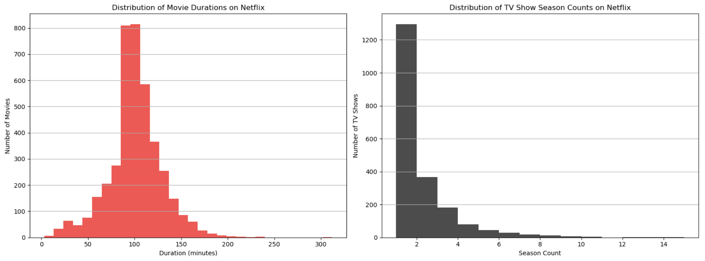
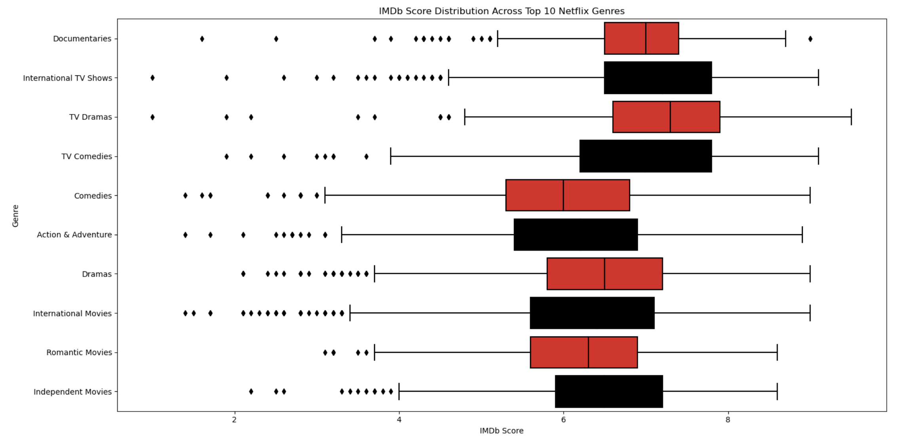
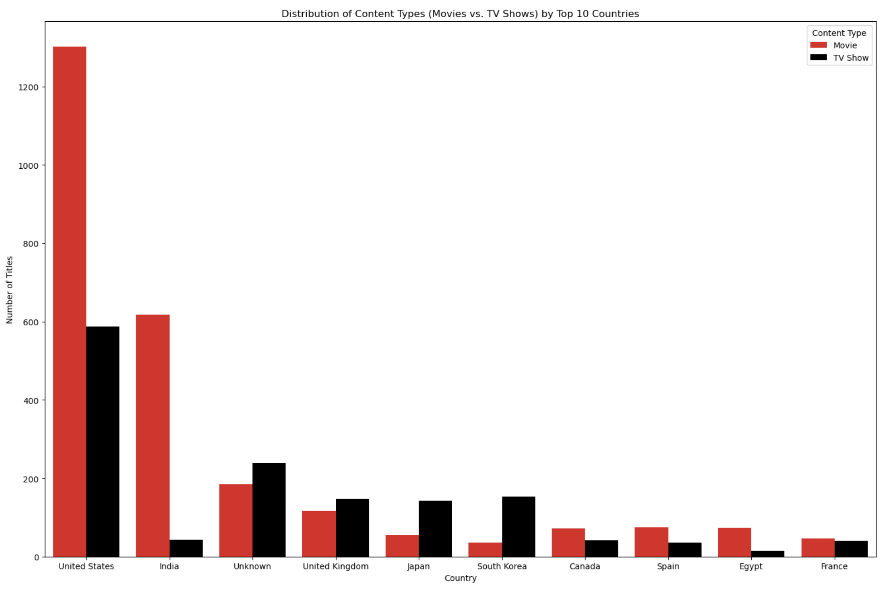
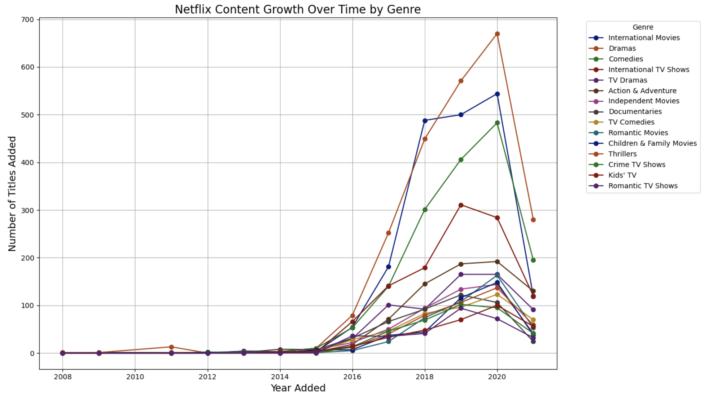
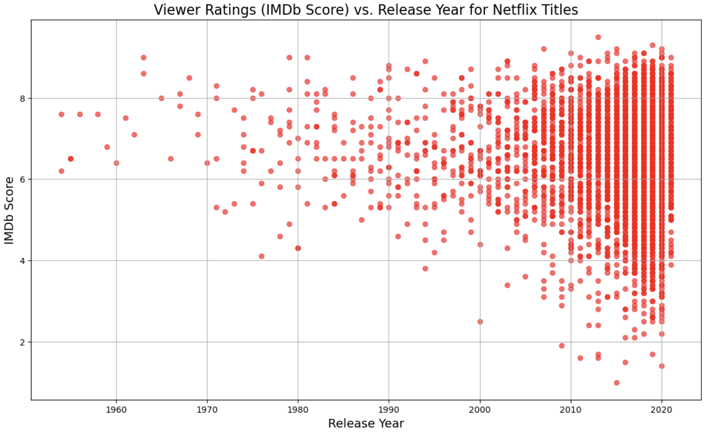

Data Insights
Interactive Dashboard
IMDb Predictor
This project aims to uncover patterns in Netflix's vast library of films and TV shows, exploring how content types have evolved over time and identifying popular genres across different regions. Our analysis delves into viewer ratings, content distribution, and genre preferences to provide a comprehensive view.
Embark on a data-driven journey as we explore patterns in Netflix's vast catalog, decipher the evolution of content types, and shed light on popular genres from various corners of the globe. Our team, the Black Hawks, employs a fusion of Netflix's metadata, IMDB ratings, and Rotten Tomatoes scores to provide a multifaceted perspective. Below are the visualizations that showcase our findings and illustrate the narratives hidden within the data.
The bubble chart, line graph, and area graph all highlight Netflix’s growth in adding shows and movies over time. These charts show that after the 1990s, there was a big jump in the number of titles Netflix offered, matching up with the popularity of streaming online. The bigger bubbles, rising line, and wider shaded areas in the graphs all point to how Netflix has been working hard to give viewers more choices, especially in recent years. This increase is likely because Netflix wants to meet market demand and technological advancements.
The side-by-side histograms provide insights into Netflix's approach to content variety and viewer engagement. With a vast selection of movies and a notable presence of short-season TV series, Netflix seems to pursue a two-pronged approach: offering a wide-ranging movie collection for varied tastes while nurturing a lineup of TV series designed to keep viewers coming back season after season. Taken together, these charts highlight Netflix's calculated balance in curating and developing content to cater different entertainment preferences.
The box plot shows IMDb score distributions across various Netflix genres, this helps us to identify which genres consistently delivered content that is highly rated, as well as to understand the range and distribution of viewer opinions within each genre. Such insights can be useful for Netflix's decisions regarding which genres to invest in and what type of content to prioritize in order to maintain high viewer satisfaction and engagement.
The graph presents the distribution of movies and TV shows on Netflix. The United States shows a high number of titles, especially in movies, followed by India. This graph helps us understand the global content strategy of Netflix, as it would indicate which regions' content is most prevalent on the platform and how Netflix caters to audiences. This analysis is interesting as it reflects the international expansion of the platform and might influence decisions regarding content production in different regions based on the audience's patterns.
This visualization provides insights into how the variety and volume of content in different genres have evolved on Netflix over the years. By tracking the number of titles added each year across various genres, you can identify trends in content acquisition and production, such as the increasing popularity of certain genres over time. This can reflect changing viewer preferences and strategic decisions by Netflix to cater to these trends.
The scatter plot of viewer ratings (IMDb Score) against the release year for Netflix titles offers a way to assess the perceived quality of content over time. This visualization can uncover insights such as trends in content quality and viewer reception over the years, helping to identify which periods and types of content have been most successful or well-received.
